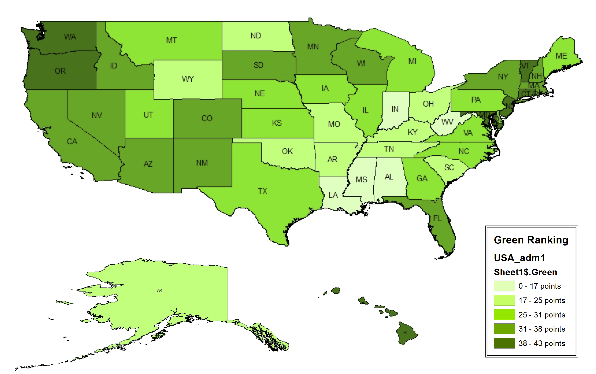

The Green Ranking
Forbes Magazine published an article in 2007 that ranked states on a “green scale,” taking into consideration data on consumption patterns, air and water quality, waste, and environmental policy. The results were surprising, slightly different than what would come to mind when people think of “green states.” Though some states like Vermont and Oregon are a “green given,” other states on the populated east coast were a surprise. This map takes a more comprehensive view of environmental friendliness across the United States.
*Greenest States
https://www.forbes.com/2007/10/16/environment-energy-vermont-biz-beltway-cx_bw_mm_1017greenstates.html